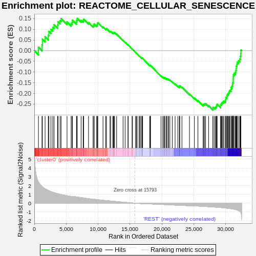
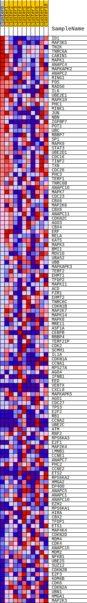
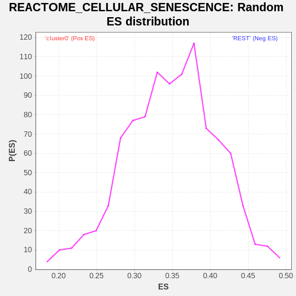

| | | Dataset | GTE_table.phenotypes_gte.cls#cluster0_versus_REST |
| Phenotype | phenotypes_gte.cls#cluster0_versus_REST |
| Upregulated in class | REST |
| GeneSet | REACTOME_CELLULAR_SENESCENCE |
| Enrichment Score (ES) | -0.277922 |
| Normalized Enrichment Score (NES) | NaN |
| Nominal p-value | NaN |
| FDR q-value | 1.0 |
| FWER p-Value | 0.0 |
Table: GSEA Results Summary

Fig 1: Enrichment plot: REACTOME_CELLULAR_SENESCENCE
Profile of the Running ES Score & Positions of GeneSet Members on the Rank Ordered List
| SYMBOL | TITLE | RANK IN GENE LIST | RANK METRIC SCORE | RUNNING ES | CORE ENRICHMENT | | 1 | ID1 | na | 649 | 2.400 | 0.0163 | No |
| 2 | MAP3K5 | na | 1204 | 1.893 | 0.0278 | No |
| 3 | TNIK | na | 1274 | 1.840 | 0.0535 | No |
| 4 | TNRC6A | na | 1690 | 1.629 | 0.0653 | No |
| 5 | CABIN1 | na | 2188 | 1.438 | 0.0717 | No |
| 6 | MAPK1 | na | 2283 | 1.409 | 0.0901 | No |
| 7 | ANAPC4 | na | 2609 | 1.313 | 0.1000 | No |
| 8 | MAPKAPK2 | na | 2901 | 1.236 | 0.1097 | No |
| 9 | ANAPC2 | na | 3104 | 1.191 | 0.1215 | No |
| 10 | RING1 | na | 3658 | 1.083 | 0.1208 | No |
| 11 | FOS | na | 3723 | 1.069 | 0.1350 | No |
| 12 | RAD50 | na | 4043 | 1.007 | 0.1404 | No |
| 13 | IL6 | na | 4206 | 0.982 | 0.1502 | No |
| 14 | UBE2E1 | na | 5133 | 0.843 | 0.1343 | No |
| 15 | MAPK10 | na | 5773 | 0.761 | 0.1261 | No |
| 16 | PHC1 | na | 5932 | 0.743 | 0.1325 | No |
| 17 | MINK1 | na | 5976 | 0.738 | 0.1423 | No |
| 18 | JUN | na | 6611 | 0.707 | 0.1334 | No |
| 19 | NBN | na | 6647 | 0.704 | 0.1430 | No |
| 20 | IGFBP7 | na | 6736 | 0.695 | 0.1508 | No |
| 21 | POT1 | na | 7340 | 0.630 | 0.1417 | No |
| 22 | UBC | na | 7653 | 0.596 | 0.1411 | No |
| 23 | RBBP7 | na | 7744 | 0.586 | 0.1472 | No |
| 24 | SP1 | na | 8503 | 0.510 | 0.1315 | No |
| 25 | MAPK9 | na | 9210 | 0.452 | 0.1165 | No |
| 26 | STAT3 | na | 9349 | 0.444 | 0.1189 | No |
| 27 | UBE2D1 | na | 9385 | 0.441 | 0.1245 | No |
| 28 | CDC16 | na | 9775 | 0.411 | 0.1187 | No |
| 29 | TINF2 | na | 9892 | 0.400 | 0.1212 | No |
| 30 | TXN | na | 9899 | 0.399 | 0.1271 | No |
| 31 | CDC26 | na | 9961 | 0.394 | 0.1311 | No |
| 32 | PHC3 | na | 10774 | 0.327 | 0.1110 | No |
| 33 | TERF1 | na | 11206 | 0.299 | 0.1022 | No |
| 34 | TNRC6B | na | 11316 | 0.291 | 0.1032 | No |
| 35 | ANAPC10 | na | 11869 | 0.251 | 0.0900 | No |
| 36 | MAPK7 | na | 11971 | 0.245 | 0.0905 | No |
| 37 | CDC23 | na | 12304 | 0.222 | 0.0836 | No |
| 38 | CBX6 | na | 12421 | 0.215 | 0.0833 | No |
| 39 | MAP2K6 | na | 12471 | 0.211 | 0.0850 | No |
| 40 | CBX8 | na | 12586 | 0.203 | 0.0845 | No |
| 41 | ANAPC11 | na | 12911 | 0.179 | 0.0773 | No |
| 42 | CDKN2C | na | 13919 | 0.112 | 0.0478 | No |
| 43 | AGO3 | na | 14241 | 0.093 | 0.0393 | No |
| 44 | CBX4 | na | 14693 | 0.065 | 0.0264 | No |
| 45 | ERF | na | 14720 | 0.064 | 0.0266 | No |
| 46 | RELA | na | 15333 | 0.027 | 0.0081 | No |
| 47 | KAT5 | na | 15398 | 0.023 | 0.0064 | No |
| 48 | MAPK3 | na | 15865 | -0.002 | -0.0079 | No |
| 49 | BMI1 | na | 16012 | -0.010 | -0.0123 | No |
| 50 | MOV10 | na | 16125 | -0.016 | -0.0155 | No |
| 51 | UBA52 | na | 16438 | -0.035 | -0.0246 | No |
| 52 | UBB | na | 16541 | -0.040 | -0.0272 | No |
| 53 | MAPKAPK3 | na | 16711 | -0.049 | -0.0317 | No |
| 54 | TERF2 | na | 16890 | -0.059 | -0.0363 | No |
| 55 | EHMT1 | na | 16893 | -0.059 | -0.0354 | No |
| 56 | TFDP2 | na | 16921 | -0.061 | -0.0353 | No |
| 57 | MAPK11 | na | 16992 | -0.064 | -0.0365 | No |
| 58 | ACD | na | 18109 | -0.084 | -0.0697 | No |
| 59 | FZR1 | na | 18179 | -0.087 | -0.0706 | No |
| 60 | EHMT2 | na | 18205 | -0.088 | -0.0700 | No |
| 61 | TNRC6C | na | 18217 | -0.089 | -0.0690 | No |
| 62 | CDKN1B | na | 19873 | -0.141 | -0.1180 | No |
| 63 | MAP2K7 | na | 20144 | -0.152 | -0.1240 | No |
| 64 | MAPK14 | na | 20298 | -0.158 | -0.1264 | No |
| 65 | MAPK8 | na | 20446 | -0.162 | -0.1284 | No |
| 66 | MRE11 | na | 20471 | -0.164 | -0.1267 | No |
| 67 | ASF1A | na | 20703 | -0.174 | -0.1312 | No |
| 68 | CEBPB | na | 20753 | -0.175 | -0.1301 | No |
| 69 | RBBP4 | na | 20947 | -0.183 | -0.1333 | No |
| 70 | TERF2IP | na | 21074 | -0.189 | -0.1343 | No |
| 71 | CDK2 | na | 21260 | -0.193 | -0.1371 | No |
| 72 | SCMH1 | na | 21635 | -0.207 | -0.1455 | No |
| 73 | IL1A | na | 22080 | -0.221 | -0.1559 | No |
| 74 | CDKN1A | na | 22511 | -0.236 | -0.1656 | No |
| 75 | CCNA1 | na | 22746 | -0.242 | -0.1692 | No |
| 76 | RPS27A | na | 22795 | -0.244 | -0.1670 | No |
| 77 | AGO4 | na | 22802 | -0.244 | -0.1635 | No |
| 78 | IFNB1 | na | 23155 | -0.257 | -0.1705 | No |
| 79 | EED | na | 24332 | -0.293 | -0.2023 | No |
| 80 | VENTX | na | 25101 | -0.313 | -0.2213 | No |
| 81 | CXCL8 | na | 25661 | -0.331 | -0.2336 | No |
| 82 | MAPKAPK5 | na | 26480 | -0.363 | -0.2534 | No |
| 83 | AGO1 | na | 26555 | -0.366 | -0.2501 | No |
| 84 | CDC27 | na | 26704 | -0.373 | -0.2491 | No |
| 85 | TP53 | na | 26865 | -0.380 | -0.2482 | No |
| 86 | E2F2 | na | 27331 | -0.401 | -0.2565 | No |
| 87 | RB1 | na | 28024 | -0.433 | -0.2714 | Yes |
| 88 | CCNA2 | na | 28030 | -0.433 | -0.2650 | Yes |
| 89 | UBE2C | na | 28297 | -0.447 | -0.2664 | Yes |
| 90 | ATM | na | 28433 | -0.455 | -0.2637 | Yes |
| 91 | RNF2 | na | 28557 | -0.462 | -0.2605 | Yes |
| 92 | RPS6KA3 | na | 28610 | -0.465 | -0.2551 | Yes |
| 93 | E2F1 | na | 28674 | -0.468 | -0.2500 | Yes |
| 94 | MAP2K4 | na | 29220 | -0.500 | -0.2592 | Yes |
| 95 | LMNB1 | na | 29221 | -0.500 | -0.2517 | Yes |
| 96 | CCNE1 | na | 29342 | -0.509 | -0.2477 | Yes |
| 97 | ANAPC7 | na | 29448 | -0.515 | -0.2431 | Yes |
| 98 | PHC2 | na | 29578 | -0.525 | -0.2392 | Yes |
| 99 | CCNE2 | na | 29732 | -0.535 | -0.2358 | Yes |
| 100 | ETS2 | na | 29972 | -0.555 | -0.2348 | Yes |
| 101 | RPS6KA2 | na | 30013 | -0.559 | -0.2276 | Yes |
| 102 | HMGA2 | na | 30030 | -0.560 | -0.2196 | Yes |
| 103 | EP400 | na | 30203 | -0.573 | -0.2162 | Yes |
| 104 | ANAPC5 | na | 30216 | -0.575 | -0.2079 | Yes |
| 105 | ANAPC1 | na | 30320 | -0.584 | -0.2023 | Yes |
| 106 | ANAPC16 | na | 30463 | -0.596 | -0.1976 | Yes |
| 107 | EZH2 | na | 30559 | -0.606 | -0.1914 | Yes |
| 108 | RPS6KA1 | na | 30656 | -0.614 | -0.1851 | Yes |
| 109 | HIRA | na | 30857 | -0.632 | -0.1817 | Yes |
| 110 | CBX2 | na | 30862 | -0.632 | -0.1723 | Yes |
| 111 | TFDP1 | na | 30995 | -0.647 | -0.1666 | Yes |
| 112 | ETS1 | na | 31085 | -0.656 | -0.1594 | Yes |
| 113 | MAP4K4 | na | 31103 | -0.658 | -0.1500 | Yes |
| 114 | CDKN2D | na | 31189 | -0.667 | -0.1425 | Yes |
| 115 | MDM4 | na | 31192 | -0.668 | -0.1324 | Yes |
| 116 | CDK4 | na | 31196 | -0.668 | -0.1224 | Yes |
| 117 | ANAPC15 | na | 31217 | -0.672 | -0.1129 | Yes |
| 118 | MDM2 | na | 31340 | -0.691 | -0.1062 | Yes |
| 119 | NFKB1 | na | 31528 | -0.718 | -0.1011 | Yes |
| 120 | UBE2S | na | 31608 | -0.732 | -0.0925 | Yes |
| 121 | SUZ12 | na | 31671 | -0.742 | -0.0832 | Yes |
| 122 | CDKN2B | na | 31679 | -0.744 | -0.0721 | Yes |
| 123 | E2F3 | na | 31776 | -0.766 | -0.0635 | Yes |
| 124 | KDM6B | na | 31832 | -0.777 | -0.0535 | Yes |
| 125 | CDK6 | na | 32042 | -0.848 | -0.0471 | Yes |
| 126 | CDKN2A | na | 32226 | -0.928 | -0.0387 | Yes |
| 127 | UBN1 | na | 32328 | -0.992 | -0.0268 | Yes |
| 128 | HMGA1 | na | 32377 | -1.043 | -0.0125 | Yes |
| 129 | MAP2K3 | na | 32397 | -1.075 | 0.0032 | Yes |
Table: GSEA details [plain text format]

Fig 2: REACTOME_CELLULAR_SENESCENCE
Blue-Pink O' Gram in the Space of the Analyzed GeneSet

Fig 3: REACTOME_CELLULAR_SENESCENCE: Random ES distribution
Gene set null distribution of ES for REACTOME_CELLULAR_SENESCENCE